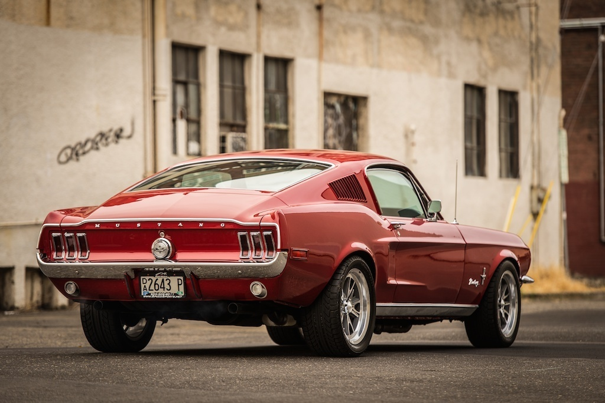
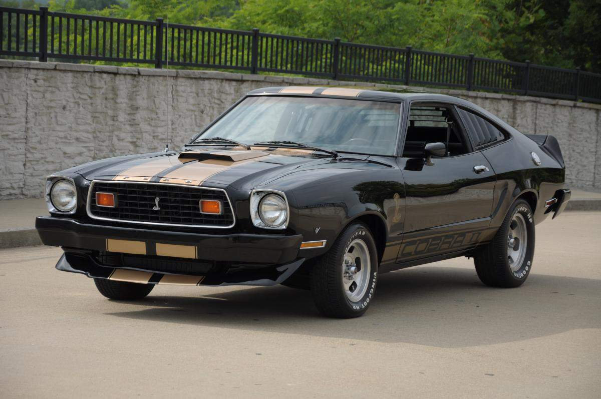

Mustang II (1974-78 гг.) ознаменовал пересмотр концепции американского Pony Car’а в условиях бензинового кризиса и изменившихся вкусов покупателей. Вместе с тем, автомобиль был намного ближе к изначальной концепции 1964 года, чем поздние модели первого поколения, очень мало напоминающие модели первых годов выпуска внешне и сильно выросшие в размере и массе, которые ставший к этому времени президентом Ford Motors Ли Якокка,
Машина была по американским меркам очень невелика (примерно с современный Ford Focus), даже меньше оригинальной модели 1964 года, и имела в базовой комплектации расточенный до 2,3 литров рядный четырёхцилиндровый двигатель Kent от европейских Ford, развивавший позорные для Америки 86 л. с. Выбор силового агрегата обуславливался соображениями экономии топлива. 
Кузов автомобиля имел фирменное обозначение Hardtop, тем не менее, он имел центральную стойку, прикрытую хромированной накладкой, а задние стекла были жёстко закреплены в проёме — то есть настоящий кузов «двухдверный хардтоп» просто имитировался. По сути, это было купе-нотчбэк. Наряду с купе выпускался трёхдверный хетчбэк. Настоящего конвертибла не было.
Конструктивно автомобиль был близок к европейским моделям: имел пружинную заднюю подвеску, реечное рулевое управление, четырёхцилиндровый двигатель и четырёхступенчатую МКПП в базе. Двигатель устанавливался на отдельном подрамнике, что снижало шумность и вибрацию. Даже многие размеры, особенно это касается двигателей, были метрическими, а не дюймовыми. 